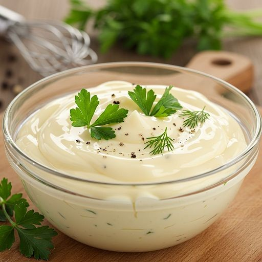

Homemade Mayonnaise

Ingredients
- 1 large egg (room temperature)
- 1 tbsp Dijon mustard
- 1 tbsp white vinegar or lemon juice
- 1 cup neutral oil (like sunflower or canola)
- Salt to taste
- Optional: ½ tsp sugar for sweetness
Instructions
- In a tall jar or bowl, add egg, mustard, vinegar, and a pinch of salt.
- Pour the oil over the mixture without stirring.
- Insert an immersion blender all the way to the bottom and turn it on.
- Hold it steady at the bottom for 5–8 seconds as the mayo emulsifies.
- Slowly move the blender upwards to mix the top layer.
- Blend until thick, creamy, and pale white in color.
- Taste and adjust salt, acidity, or sweetness.
- Refrigerate and use within a week.
← Back to Home